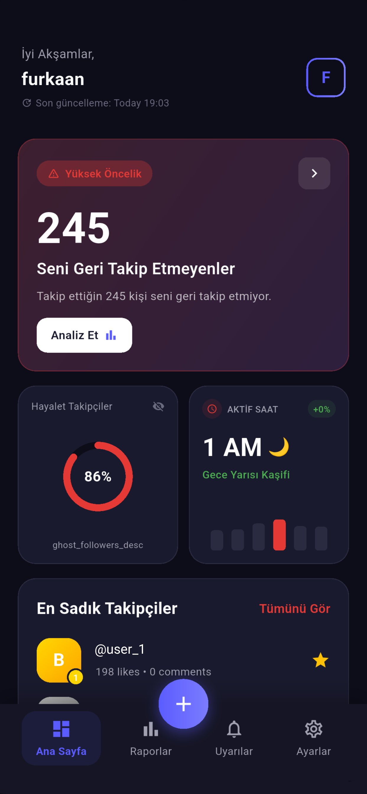

Veri Arşivinizi
Anlamlandırın
Kendi Instagram veri dışa aktarma arşivinizdeki desteklenen takipçi, etkileşim ve ilgi alanı kayıtlarını keşfedin.



Kendi Instagram veri dışa aktarma arşivinizdeki desteklenen takipçi, etkileşim ve ilgi alanı kayıtlarını keşfedin.

Analizler, seçtiğiniz dışa aktarma arşivindeki desteklenen kayıtlardan türetilir. Sonuçlar yaklaşık olabilir; Instagram veya Meta tarafından doğrulanmış canlı ölçümler değildir.
Arşivinizdeki desteklenen etkileşim kayıtlarına dayalı pasif takipçi tahminlerini inceleyin.
Seçtiğiniz arşivde bulunan takipçi ve takip edilen listelerini karşılaştırın.
Arşivinizdeki desteklenen beğeni, yorum ve etkileşim kayıtlarının özetlerini inceleyin.
Instagram veri arşiviniz cihazınızda yerel olarak analiz edilir ve analiz amacıyla SocialSense sunucularına yüklenmez.
Arşivinizdeki desteklenen aktivite kayıtlarından türetilen zaman örüntülerini inceleyin.
Arşivinizdeki desteklenen etkileşim kayıtlarından türetilen hesap sıralamalarını inceleyin.